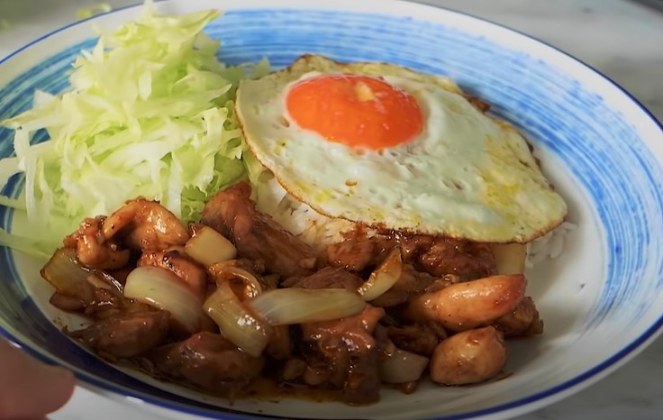

Resep Ayam Goreng Mentega
Resep Ayam Goreng Mentega

Bahan-Bahan:
- 500 gram ayam bagian paha tnp tulang
- 2 sdm margarin blueband
- 3 siung bawang putih
- 1/2 bawang bombay ( kalo suka boleh banyakan )
- 4 sdm kecap inggris
- 2 sdm kecap manis
- 1 sdm chili sauce / cabe botolan
- 2 sdm oyster sauce / saus tiram ( 1 sdm utk marinasi, 1 sdm utk saus )
- lada secukup nya utk ayam
Pelengkap
- nasi
- telur ceplok
- selada air
Cara Membuat:
- Potong selada air, bawang putih, bawang bombay, dan ayam (ukuran potong sesuai selera).
- Bumbui ayam dengan 1 sdm oyster sauce dan merica, lalu di remas-remas, kemudian dimasukan ke dalam kulkas.
- Lelehkan margarin di penggorengan.
- Jika sudah meleleh, masukan ayam. Goreng ayam sampai kecoklatan di seluruh permukaan ayam
- masak telur ceplok di tempat terpisah.
- Jika ayam sudah berwarna kecoklatan masukan bawang putih dan juga bawang bombay.
- Jika bawang bombay nya sudah mulai layu, tuang 4 sdm kecap inggris, 2 sdm kecap manis, 1 sdm chili sauce,dan 1 sdm oyster sauce.
- jika semua saus sudah terserap tandanya sudah matang dan siap disajikan.
Link video: